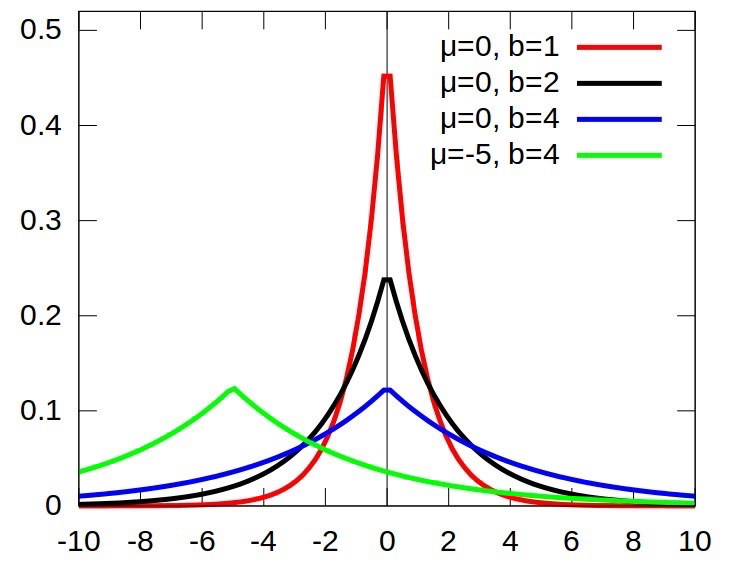

简介
一些关于深度学习的基础知识。
基本网络结构
卷积
- 假设输入为 (B, C, H, W), 卷积核为 (Cin, Cout, ks1, ks2), 则有 Cin × Cout 个不同参数的 ks1 × ks2 的卷积核、
- 需要了解怎么计算输出特征图的大小（自行理解，强行记忆不太好）
- 对大小为 H × W 的 feature map，考虑卷积核大小为 h × w, 填充(padding) 为 a, 步长(stride) 为 b, 则：$\left\{\begin{array}{c}H^{\prime}=\frac{H+2 * a-h}{b}+1 \\ W^{\prime}=\frac{W+2 * a-w}{b}+1\end{array}\right.$
- 局部连接：不是全连接，而是使用size相对input小的kernel在局部感受视野内进行连接（点积运算）
- 权值共享：在一个卷积核运算中，每次都运算一个感受视野，通过滑动遍历的把整个输入都卷积完成，而不是每移动一次就更换卷积核参数
1x1卷积
作用:
- 降维和升维
- 不同通道信息交互(cross-channel correlations and spatial
correlations)
- 1 × 1 卷积其实是对不同 channel 间的信息进行了线性组合
- 深度可分离卷积(depth-wise seperable convolution)实现了对cross-channel correlation和spatial correlation的彻底解耦
- 增加非线性特征：后接非线性激活函数
池化
作用：
- 特征不变形：池化操作是模型更加关注是否存在某些特征而不是特征具体的位置。
- 特征降维：池化相当于在空间范围内做了维度约减，从而使模型可以抽取更加广范围的特征。同时减小了下一层的输入大小，进而减少计算量和参数个数。
- 在一定程度上防止过拟合，更方便优化。
池化的大小计算和卷积类似
特征融合
特征融合有两种常用方式：
- add 操作，例如 ResNet 中的残差连接
- concate 操作，例如 UNet 中的连接
联系：对于 Concat 的操作，通道数相同且后面带卷积的话，add 等价于concat 之后对应通道共享同一个卷积核，采用 add 操作，我们相当于加入一种先验。当两个分支的特征信息比较相似，可以用 add 来代替 concat，这样可以更节省参数量。
区别：
- 对于 Concat 操作而言，通道数的合并，也就是说描述图像本身的特征增加了，而每一特征下的信息是没有增加。
- 对于 add 层更像是信息之间的叠加。这里有个先验，add 前后的 tensor 语义是相似的。
注意力机制
这张图主要是针对于机器翻译中用的，在翻译的时候，每一个输出Query需要于输入Key的各个元素计算相似度，再与Value 进行加权求和～
对于CV领域中，我们一般都是用矩阵运算了，不像NLP中的任务，需要按照时刻进行，CV中的任务，就是一个矩阵运算。
用公式来概括性地描述就是： Attention ( Q, S ) = Similarity ( Q, K) * V 划重点，我们有不同的方法来衡量相似度，这里我们主要有以下几种方案来衡量相似度： $$ \begin{array}{r} \text { 点积: Similarity }\left(\text { Q }, \mathrm{K}\right)=\text { Q } \cdot \mathrm{K} \\ \text { Cosine相似性: } \text { Similarity }\left(\text { Q }, K\right)=\frac{\text { Q } \cdot K}{\mid \text { Q }|\cdot| K \mid} \\ M L P \text { 网络: Similarity }\left(\text { Q, } K \right)=M L P\left(\text { Q }, K\right) \end{array} $$ 当有了相似度之后，我们需要对其进行归一化，将原始计算分值整理成所有元素权重之和为1的概率分布，越重要的部分，越大！越不重要的部分，越小。我们采用Softmax为主，当然也有一些使用Sigmoid这样来进行运算，都是ok的～
因此，这个权重Mask的值可以这么计算： $$ Mask = \operatorname{softmax}\left(\frac{Q K^{T} }{\sqrt{d_{k} }}\right) $$ 其中$\sqrt{d_{k} }$表明将数据进行下缩放，防止过大了。
最后就是得到Attention的输出了： Attention (Q, K, V) = Mask * V
Non-local Attention
输入特征x，通过1 * 1卷积来得到Key, Query, Value，这里的三个矩阵是不同的，因此上文中是假设 相同。
其中代码如下：
1 | class Self_Attn(nn.Module): |
代码看上去还是比较容易懂得，主要就是 torch.bmm() 函数，它可以将纬度为 B × N × C 矩阵与 B × C × N 的矩阵相乘的到 B × N × N 的矩阵。再使用 Softmax 来得到归一化之后的矩阵，结合残差，得到最后的输出！
CBAM
CBAM由Channel Attention与Spatial Attention组合而成。
其中的Channel Attention 模块，主要是从C x H x w 的纬度，学习到一个C x 1 x 1的权重矩阵。
论文中的图如下：
代码示例如下：
1
2
3
4
5
6
7
8
9
10
11
12
13
14
15
16
17
18class ChannelAttentionModule(nn.Module):
def __init__(self, channel, reduction=16):
super(ChannelAttentionModule, self).__init__()
mid_channel = channel // reduction
self.avg_pool = nn.AdaptiveAvgPool2d(1)
self.max_pool = nn.AdaptiveMaxPool2d(1)
self.shared_MLP = nn.Sequential(
nn.Linear(in_features=channel, out_features=mid_channel),
nn.ReLU(inplace=True),
nn.Linear(in_features=mid_channel, out_features=channel)
)
self.sigmoid = nn.Sigmoid()
def forward(self, x):
avgout = self.shared_MLP(self.avg_pool(x).view(x.size(0),-1)).unsqueeze(2).unsqueeze(3)
maxout = self.shared_MLP(self.max_pool(x).view(x.size(0),-1)).unsqueeze(2).unsqueeze(3)
return self.sigmoid(avgout + maxout)
当然，我们可以使用Query, Value, Key的形式来对它进行修改成一个统一架构，只要我们可以学习到一个在通道纬度上的分布矩阵就好。
如下方伪代码，key, value, query 均为1 * 1卷积生成。
1 | # key: (N, C, H, W) |
对于Spatial Attention，如图所示：
参考代码如下：
1 | class SpatialAttentionModule(nn.Module): |
采用Query, Key, Value的框架来进行改写：
1 | key = key_conv(x) |
激活函数
损失函数
优化器
正则化
Dropout
目前来说，Dropout有两种。第一种就是传统的Dropout方案。另一种，就是我们的吴恩达老师所讲的Inverted Dropout了。 这两种方案本质上没什么区别，在实现的过程中是有区别的，接下来我们会详细进行比较。
这里先给出其数学公式：
Training Phase : y = f(Wx) ∘ m, mi ∼ Bernoulli (p) Testing Phase : y = (1 − p)f(Wx)
首先，看下Dropout论文中给出的图像，了解下Dropout究竟干了个啥。
概括来说：Dropout提供了一种有效地近似组合指数级的不同经典网络架构的方法。
将Dropout应用到神经网络中，相当于从该网络中采样一些子网络。这些子网络由所有在Dropout操作后存活下来的单元节点组成。如果一个神经网络有n个节点，则能够产生2n中可能的子网络。在测试阶段，我们不是直接将这些指数级的子网络显式的取平均预测，而是采用一种近似的方法：仅使用单个神经网络，该网络的权重是先前训练的网络权重乘以失活概率p。这样做可以使得在训练阶段隐藏层的期望输出（在随机丢弃神经元的分布）同测试阶段是一致的。这样可以使得这2n个网络可以共享权重。
- Inverted Dropout
先看下Inverted Dropout的实现代码，假设，我们的输入是x，p表示随机丢弃的概率, 1 − p表示的是神经元保存的概率。则Inverted Dropout的实现过程如下代码所示：
1 | import numpy as np |
这里解释下，为什么在后面还需要进行 x/=retain_prob 的操作？
假设该层是输入，它的期望是a，在不使用Dropout的时候，它的期望依旧是a。如果该层进行了Dropout, 相当于有p的概率被丢弃，1 − p的概率被保留，则此层的期望为(1 − p) * a * 1 + p * a * 0 = (1 − p) * a,为了保证输入与输出的期望一致，我们需要进行代码中x/ = retain_prob这一步。
- 传统Dropout
对于传统的Dropout，在训练的时候，我们不需要进行x/ = retain_prob的这一步，直接进行神经元Drop操作。此时，假设输入x的期望是a，则此时的输出期望为(1 − p) * a。我们在测试的时候，整个神经元是保留的，因此输出期望为a。为了让输入与输出的期望一致，则在测试的阶段，需要乘以(1 − p),使其期望值保持(1 − p) * a。
传统的dropout和Inverted-dropout虽然在具体实现步骤上有一些不同，但从数学原理上来看，其正则化功能是相同的，那么为什么现在大家都用Inverted-dropout了呢？主要是有两点原因：
测试阶段的模型性能很重要，特别是对于上线的产品，模型已经训练好了，只要执行测试阶段的推断过程，那对于用户来说，推断越快用户体验就越好了，而Inverted-dropout把保持期望一致的关键步骤转移到了训练阶段，节省了测试阶段的步骤，提升了速度。
dropout方法里的 p是一个可能需要调节的超参数，用Inverted-dropout的情况下，当你要改变 p 的时候，只需要修改训练阶段的代码，而测试阶段的推断代码没有用到 p ，就不需要修改了，降低了写错代码的概率。
DropConnect
与 dropout 类似但对象是网络权重而不是特征图
这里给出一个Github上面针对卷积核的2D DropConnect操作。
1 | import torch |
上面的代码，我们其实只需要主要看下self.dropout(self.weight) * self.p这么一部分代码。
Spatial Dropout
考虑特征图的相邻位置有强关联，所以一次性 drop 整个通道的特征图
Stochastic Depth
这个 drop 的是 ResNet 的模块
若网络总共有 L 个block，我们给每个block都加上了一个概率 pl 。
在训练时： 根据pl 用一个bernoulli随机变量生成每个block的激活状态 bl，最终把 ResNet 的 bottleneck block，从Hl = ReL U(fl(Hl − 1) + idtentity(Hl − 1))调整成了Hl = ReLU (blfl(Hl − 1) + idtentity(Hl − 1))。
其中，当bl = 0时，表明这个block未被激活，此时Hl = ReL U(identity(Hl − 1))。特别地是。其中pl是从p0 = 1线性衰减到pL = 0.5，即$p_{l}=1-\frac{l}{L}\left(1-p_{L}\right)$。
在预测的时候：
block被定义为： HlTest = ReL U(plfl(Hl − 1Test ) + identity(Hl − 1Test ))。相当于将pl与该层的残差做了一个权值融合了。
个人觉得这样Drop有以下两个好处：
- 这种引入随机变量的设计有效的克服了过拟合使模型有了更好的泛化能力。这种Drop的方式，本质上一种模型融合的方案。由于训练时模型的深度随机，预测时模型的深度确定，事实上是在测试时把不同深度的模型融合了起来。
- 以往的Dropout或者DropConnect都主要是在全连接层进行，这里是对整个网络进行Drop的。
这里给出一个参考代码如下：
1 | class BottleNeck(nn.Module): |
L1与L2正则化
正则化(Regularization) 是机器学习中对原始损失函数引入惩罚项，以防止过拟合或提高模型泛化性能的一类方法的统称。所谓惩罚是指对损失函数中的某些参数做一些限制。此时目标函数变成了原始损失函数+惩罚项，常用的正则项一般有两种，英文称作 l1 − norm 和 l2 − norm，中文称作 L1 正则化和 L2 正则化，或者 L1 范数和 L2 范数（实际是 L2 范数的平方）。
对于线性回归模型，使用 L1 正则化的模型叫做 Lasso 回归，使用 L2 正则化的模型叫做 Ridge 回归（岭回归）。
L1正则化
假设带有L1正则化的目标函数为：
J = J0 + ||W||1 = J0 + α∑|w| (1)
其中，J0为原始的损失函数，α∑|w|为L1正则化项，α为正则化系数，w 表示特征的系数（x的参数），可以看到正则化项是对系数做了限制。L1 正则化是指权值向量 w 中各个元素的绝对值之和，通常表示为 ∥w∥1。
L1 范数符合拉普拉斯分布，是不完全可微的。表现在图像上会有很多角出现。这些角和目标函数的接触机会远大于其他部分。就会造成最优值出现在坐标轴上，因此就会导致某一维的权重为0 ，产生稀疏权重矩阵，进而防止过拟合。
L1正则化项相当于对原始损失函数J0做了一个约束。我们令L = α∑|w|，那么整个目标函数可以写成： J = J0 + L (2)
我们的目的就是求出在约束条件L下，J0取最小值的解。为了方便理解，我们考虑二维的情况，此时L = |w1|+|w2|
图中等高线是 J0 的等高线，黑色菱形是 L 函数的图形。图中当等高线 J0 与 L 图形首次相交的地方就是最优解。上图中 J0 与 L 在一个顶点处相交，这个顶点就是最优解 w∗。
拓展到多维，L 函数就会有很多突出的角（二维情况下四个，多维情况下更多），J0 与这些角接触的概率远大于与 L 其它部位接触的概率（这是很直觉的想象，突出的角比直线的边离等值线更近），而在这些角的位置上使很多权重为 0。所以在最优解处，L1 正则化就可以产生稀疏模型，进而可以用于特征选择。
α正则化系数，可以控制 L 图形的大小，α越小，L 图形越大，α越大，L 图形越小。
L1正则化对所有参数的惩罚力度都一样，可以让一部分权重变为 0，去除某些特征（权重为 0 则等效于去除），因此产生稀疏模型。
那么稀疏模型有什么好处呢？
稀疏化正则化项一个最重要的优势就在于实现特征的自动选择。所谓稀疏性，说白了就是模型的很多参数是 0。通常机器学习中特征数量很多，例如文本处理时，如果将一个词组（term）作为一个特征，那么特征数量会达到上万个（bigram）。但是只有少数特征对该模型有贡献，绝大部分特征是没有贡献的。在最小化目标函数时，需要考虑这些额外的特征，虽然能获得更小的训练误差，但在预测阶段，模型会考虑这些无用的特征，从而可能干扰模型的正确预测。
这种模型就是所谓的泛化性能不强，有过拟合的嫌疑。如果通过稀疏化正则化项得到一个稀疏模型，很多参数是0，此时我们就可以只关注系数是非零值的特征。这相当于对模型进行了一次特征选择，只留下一些比较重要的特征，提高模型的泛化能力，降低过拟合的可能。这就是稀疏模型与特征选择的关系。
L2正则化
假设带有L2正则化的目标函数为： J = J0 + ||w||22 = J0 + α∑w2 (3) 同L1正则化，w 表示特征的系数（ x 的参数），可以看到正则化项是对系数做了限制。L2正则化是指权值向量 w 中各个元素的平方和然后再求平方根（可以看到 Ridge 回归的L2正则化项有平方符号），通常表示为 ∥w∥2。
L2 范数符合高斯分布，是完全可微的。和 L1 相比，图像上为一个圆。一般最优值不会在坐标轴上出现。在最小化正则项时，参数不断趋向于 0，但并不是 0。
如下图：
相比于L1正则化，L2正则化的函数 L 与 J0 第一次相交的地方出现在具有稀疏性的位置的概率就变得非常小了。这就从直观上来解释了为什么L1正则化能产生稀疏性，而L2正则化不能产生稀疏性的原因了。
L2正则化的作用：主要是为了防止过拟合。
拟合过程中通常都倾向于让权值尽可能小，最后构造一个所有参数都比较小的模型。因为一般认为参数值小的模型比较简单，泛化能力强，能适应不同的数据集，也在一定程度上避免了过拟合现象。可以设想一下对于一个线性回归方程，若参数很大，那么只要数据偏移一点点，就会对结果造成很大的影响；但如果参数足够小，数据偏移得多一点也不会对结果造成什么影响，专业一点的说法是抗扰动能力强。
越是复杂的模型，越是尝试对所有样本进行拟合，包括异常点。这就会造成在较小的区间中产生较大的波动，这个较大的波动也会反映在这个区间的导数比较大。只有越大的参数才可能产生较大的导数。因此参数越小，模型就越简单。
为什么L2正则化能够得到值很小的参数？？？
我们通过线性回归，来看一下L2正则化解决过拟合问题。
假设要求解的参数为θ，hθ(x) 是假设函数。线性回归一般使用平方差损失函数。单个样本的平方差是(hθ(x) − y)2，如果考虑所有样本，损失函数是对每个样本的平方差求和，假设有 m 个样本，线性回归的损失函数如下， $$ J(\theta) = \frac{1}{2m} \sum^m_{i=1} (h_{\theta}(x^{(i)}) - y^{(i)})^2 \ \ \ \ \ \ \ \ (4) $$
其梯度下降算法公式为： $$ \theta_j = \theta_j - \alpha \frac{1}{m}[\sum_{i=1}^m(h_{\theta}(x^{(i)}-y^{(i)})x_j^{(i)}] \ \ \ \ \ \ \ \ (5) $$
加入L2正则化后，其损失函数为 $$ J(\theta) = \frac{1}{2}\sum^m_{i=1}((h_{\theta}(x^{(i)}) - y^{(i)})^2 + \lambda\sum^m_{i=1}\theta_j^2) \ \ \ \ \ \ \ \ (6) $$ 其梯度下降算法公式为： $$ \theta_j = \theta_j - (\alpha \frac{1}{m}[\sum_{i=1}^m(h_{\theta}(x^{(i)}-y^{(i)})x_j^{(i)}] + \lambda \theta_j)=\theta_j(1-\alpha\frac{\lambda}{m}) - (\alpha \frac{1}{m}\sum_{i=1}^m(h_{\theta}(x^{(i)}-y^{(i)})x_j^{(i)}) \ \ \ \ \ \ \ \ (7) $$ 可以看到，由于学习率 α > 0, λ > 0，且这两个值一般都是很小的正数，所以 $0< 1-\alpha\frac{\lambda}{m} < 1$，所以每次 θ 在更新的时候都会减小，λ 越大，衰减的越快，这也是L2正则化可以获得更小的权重值的原因。
正如在线性回归中的应用，L2 正则化就是在损失函数中加入一个 L2 范数和一个超参数 λ，L2范数用 ∥w∥2 这种符号表示，它的意思是对于向量 w 中的各个数先求平方再加和。线性回归中加入的对于 θj 求平方和就是一个 L2 范数。超参数λ 则用于控制参数惩罚的程度。
我们在举个例子，来展示L2正则化如何解决过拟合的现象
将上述公式分为两部分，左边部分即为原始的损失函数，右边部分为 L2 正则化项（注意：正则化项中不包含θ0）。λ 为超参数，是人为设定的。为了最小化整个损失函数，那么就要减小 θ1 ~ θn 的值。对于上图中的那种过拟合状态，加入正则项后，θ1 ~ θn减小，也就是使得权重衰减，这样就会降低高阶项对于整个函数的影响，使得估计函数变得比较平滑。
可以想象一种极端的情况，如果λ 为无穷大，那么 θ1 ~ θn 趋近于0，那么整个式子就只剩一个θ0，为一条和 y 轴垂直的直线，这种状态为严重的欠拟合状态。可以看到，当λ为0时，即为原来的状态，此时过拟合。所以会有一个恰当的λ使得模型处于既不过拟合又不欠拟合的状态。
在未加入L2正则化发生过拟合时，拟合函数需要顾忌每一个点，最终形成的拟合函数波动很大，在某些很小的区间里，函数值的变化很剧烈，也就是某些 w 值非常大。为此，L2 正则化的加入惩罚了权重变大的趋势,逼迫所有 w 尽可能趋向零但不为零（L2正则化的导数趋于零），导致权重较为平滑。
直观理解
假设只有一个参数为w，损失函数为L(w)，分别加上L1正则项和L2正则项后有：
$$ J_{L1}(w)=L(w) +\lambda|w| \\ J_{L2}(w)=L(w)+\lambda w^{2} $$ 这里，假设L(w)在0处的导数值为d0，即： $$ \left.\frac{\partial L(w)}{\partial w}\right|_{w=0}=d_{0} $$ 这时，可以推导使用L1正则和L2正则时的导数。
当引入L2正则项，在0处的导数：$\left.\frac{\partial J_{L 2}(w)}{\partial w}\right|_{w=0}=d_{0}+2 \times \lambda \times w=d_{0}$
引入L1正则项，在0处的导数： $$ \begin{array}{l} \left.\frac{\partial J_{L 1}(w)}{\partial w}\right|_{w=0^{-} }=d_{0}-\lambda \\ \left.\frac{\partial J_{L 1}(w)}{\partial w}\right|_{w=0^{+} }=d_{0}+\lambda \end{array} $$ 可见，引入L2正则时，损失函数在0处的导数仍是d0 ，无变化。
而引入L1正则后，损失函数在0处的导数有一个突变。从d0 − λ到d0 + λ。若d0 − λ与d0 + λ异号，则在0处会是一个极小值点。因此，优化时，很可能优化到该极小值点上，即w = 0处。
当然，这里只解释了有一个参数的情况，如果有更多的参数，也是类似的。因此，用L1正则更容易产生稀疏解。
先验概率看L1更稀疏
假设，我们的数据数据是稀疏的,不妨就认为它来自某种laplace分布。其中laplace的概率密度函数图像如下图所示：

再看看laplace分布的概率密度函数: $$ f(x \mid \mu, b)=\frac{1}{2 b} \exp \left(-\frac{|x-\mu|}{b}\right) $$ 如果取对数,剩下的是一个一次项|x − u|,这就是L1范式。所以用L1范式去正则,就假定了你的数据是稀疏的laplace分布。
总结
- L1正则化项是模型各个参数的绝对值之和。L2正则化项是模型各个参数的平方和的开方值。
- L1正则化可以使部分权重为0，产生稀疏权值矩阵，即产生一个稀疏模型，可以用于特征选择；一定程度上，L1也可以防止过拟合，当L1的正则化系数很小时，得到的最优解会很小，可以达到和L2正则化类似的效果。
- L2正则化通过权重衰减，可以使所有的权重趋向于0，但不为0，导致模型权重参数较小且较为平滑，防止模型过拟合（overfitting）；
- L2正则化的效果是对原最优解的每个元素进行不同比例的放缩；L1正则化则会使原最优解的元素产生不同量的偏移，并使某些元素为0，从而产生稀疏性。
标签平滑
标签平滑（Label Smoothing）：在训练时即假设标签可能存在错误，避免“过分”相信训练样本的标签。当目标函数为交叉熵时，这一思想有非常简单的实现，称为标签平滑（Label Smoothing）。
为了达到这个目标，我们很自然想到的方法是：在每次迭代时，并不直接将(xi,yi)放入训练集，而是设置一个错误率 ϵ，以 1-ϵ 的概率将(xi,yi)代入训练，以 ϵ 的概率将(xi, 1 − yi)代入训练。这样，模型在训练时，既有正确标签输入，又有错误标签输入，可以想象，如此训练出来的模型不会“全力匹配”每一个标签，而只是在一定程度上匹配。这样，即使真的出现错误标签，模型受到的影响就会更小。
具体实现来说：对于标签为 1 的类别我们将标签设置为 1 − ϵ，对于标签为 0 的类别我们将标签设置为 ϵ.
下面我们给出在使用标签平滑时的 softmax 损失的代码实现：
1 | def cross_entropy_loss(preds, target, reduction): |
技巧
增加BatchSize
在Backbone不变的情况下，若显存有限，如何增大训练时的batch size？
- 使用inplace操作，比如relu激活函数，我们可以使用inplace=True
- 每次循环结束时候，我们可以手动删除loss，但是这样的操作，效果有限。
- 使用float16混合精度计算，据有关人士测试过，使用apex，能够节省将近50%的显存，但是还是要小心mean与sum会溢出的操作。
- 训练过程中的显存占用包括前向与反向所保存的值，所以在我们不需要bp的forward的时候，我们可以使用torch.no_grad()。
- 如使用将batchsize=32这样的操作，分成两份，进行forward，再进行backward，不过这样会影响batchnorm与batch size相关的层。yolo系列cfg文件里面有一个参数就是将batchsize分成几个sub batchsize的。
- 使用pooling，减小特征图的size，如使用GAP等来代替FC等。
- optimizer的变换使用，理论上，显寸占用情况 sgd < momentum < adam，可以从计算公式中看出有额外的中间变量。
- 梯度累加，需要适当学习率，对 BN 也有显著影响
总的来说最有效的还是混合精度和梯度累加。
模型
反向传播（BP）
反向传播（Back Propagation）是一种网络学习方法，主要特定是信号前向传递，误差反向传播，通过不断调节网络权重值，使得网络的最终输出与期望输出尽可能接近，以达到训练的目的。
举个简单的例子：
x是网络的输入，y 是网络的输出，w 是网络学习到的参数。我们的目标是通过更新 w 寻找一个 fw(x) = y ，即： minw∑x∥fw(x) − y∥2 将 E = ∑x∥fw(x) − y∥2 记为损失项，我们的目标是寻找能使损失 E 最小的参数 w。具体而言，常用的经典方法为梯度下降法，即随机生成一个 w 然后向着梯度下降的方向更新优化： $$ w^{+}=w-\eta \cdot \frac{\partial E}{\partial w} $$ 这里 w 是一个随机初始化的权重，$\frac{\partial E}{\partial w}$ 是表示当前误差对权重w的梯度。η 是表示的学习率，通常不会很大，都是0.01以下的值，用来控制更新的步长。
链式求导应该很简单就不说了。
评价指标
IOU
目标检测中的IOU
假设，我们有两个框，rec1与rec2，我们要计算其IOU。其中IOU的计算公式为，其交叉面积Intersection除以其并集Union。

IOU的数学公式为： $$ I o U=\frac{S_{rec1} \cap S_{rec2} }{S_{rec1} + S_{rec2} - S_{rec1} \bigcap S_{rec2} } $$
1 | def compute_iou(rec1, rec2): |
这里我们主要讨论下这个if判断，我们以横轴 x 方向为例，其中对 y
纵轴方向是一样的，我们来判断两个框重合与否。其中 x0 为 rec1 左上角的
x 坐标，x1 是 rec1 右下角的
x 坐标。A0 为 rec2 的左上角
x 坐标，A1 是 rec2 的右下角
x 坐标。

语义分割中的IOU
$$ IOU = \frac{\text { target } \bigwedge \text { prediction } }{target \bigcup prediction} $$
1 | def compute_ious(pred, label, classes): |
其中，对于 label 与 pred 有多种形式。如识别目标为 4 类，那么 label 的形式可以是一张图片对应一份 mask[0，1，2，3，4]，其中 0 为背景，我们省略，则 class 可以为 [1, 2, 3, 4]。也可以是对应四份二进制 mask[0，1], 这四层 mask 的取值为 0/1。class 为 [1] 。
NMS
Non-Maximum-Suppression(非极大值抑制): 当两个 box 空间位置非常接近，就以 score更高的那个作为基准，看 IOU 即重合度如何，如果与其重合度超过阈值，就抑制 score 更小的 box，只保留 score 大的就 Box，其它的 Box 就都应该过滤掉。对于 NMS 而言，适合于水平框，针对各种不同形状的框，会有不同的 NMS 来进行处理。
参考代码如下：
1 | import numpy as np |
SoftNMS
说到 Soft NMS，首先需要了解传统 NMS 有哪些缺点。其主要缺点包括如下：
- 物体重叠：有一个最高分数的框，如果使用 NMS 的话就会把其他置信度稍低，但是表示另一个物体的预测框删掉（由于和最高置信度的框 overlap 过大）
- 所有的 bbox 都预测不准：不是所有的框都那么精准，有时甚至会出现某个物体周围的所有框都标出来了，但是都不准的情况
- 传统的 NMS 方法是基于分类分数的，只有最高分数的预测框能留下来，但是大多数情况下 IoU 和分类分数不是强相关，很多分类标签置信度高的框都位置都不是很准
Soft NMS 主要是针对 NMS 过度删除框的问题。Soft-NMS 吸取了 NMS 的教训，在算法执行过程中不是简单的对 IoU 大于阈值的检测框删除，而是降低得分。算法流程同 NMS 相同，但是对原置信度得分使用函数运算，目标是降低置信度得分。其算法步骤如下：
红色的部分表示原始 NMS 算法，绿色部分表示 Soft-NMS 算法，区别在于，绿色的框只是把si降低了，而不是把bi直接去掉，极端情况下，如果f只返回0，那么等同于普通的NMS。
bi为待处理 BBox 框，ℬ为待处理 BBox 框集合，si是bi框更新得分，Nt是 NMS 的阈值，D 集合用来放最终的 BBox，f是置信度得分的重置函数。bi和ℳ的 IOU越大，bi的得分si就下降的越厉害。
f函数是为了降低目标框的置信度，满足条件，如果bi和ℳ的 IoU 越大，f(iou(ℳ, bi))就应该越小， Soft-NMS提出了两种f函数：
经典的 NMS 算法将 IOU 大于阈值的窗口的得分全部置为 0，可表述如下： $$ s_i = \left\{\begin{matrix} s_i, &iou(\mathcal{M},b_i) < N_t\\ 0, &iou(\mathcal{M}, b_i) \geq N_t \end{matrix}\right. $$ 论文中置信度重置函数有两种形式改进，一种是线性加权的： $$ s_i = \left\{\begin{matrix} s_i, &iou(\mathcal{M},b_i) < N_t\\ s_i(1-iou(\mathcal{M},b_i)), &iou(\mathcal{M}, b_i) \geq N_t \end{matrix}\right. $$ 一种是高斯加权形式： $$ s_{i}=s_{i} e^{-\frac{\mathrm{iou}\left(\mathcal{M}, b_{i}\right)^{2}}{\sigma}}, \forall b_{i} \notin \mathcal{D} $$ SoftNMS算法的优点如下：
该方案可以很方便地引入到object detection算法中，不需要重新训练原有的模型;
soft-NMS在训练中采用传统的NMS方法，可以仅在推断代码中实现soft-NMS。
NMS 是 Soft-NMS特殊形式，当得分重置函数采用二值化函数时，Soft-NMS 和 NMS 是相同的。soft-NMS 算法是一种更加通用的非最大抑制算法。
这里提供一个github 中的Cython代码展示:
1 | def cpu_soft_nms(np.ndarray[float, ndim=2] boxes, float sigma=0.5, float Nt=0.3, float threshold=0.001, unsigned int method=0): |
SofterNMS
Softer NMS 的改进：
针对分类置信度和框的 IoU 不是强相关的问题，构建一种 IoU 的置信度，来建模有多大把握认为当前框和 GT 是重合的。
针对所有的框单独拿出来都不准的问题，文章中提出一种方法，根据 IoU 置信度加权合并多个框优化最终生成框。
Softer-NMS 文章对预测框建模，以下公式中 x 表示偏移前的预测框，xe 表示偏移后的预测框，输出的 xg 表示 GT 框，使用高斯函数对预测框建模: $$ P_{\Theta}(x)=\frac{1}{2 \pi \sigma^{2}}e^{-\frac{(x-x_{e})^2}{2 \sigma^{2}}} $$ 对于 GT 框建模：使用delta分布(即标准方差为0的高斯分布极限)。 PD(x) = δ(x − xg) 对于delta分布，当σ越小，其函数图像就会越瘦高，同时，当σ越小，表示网络越确定，可以使用1 − σ就可以作为网络的置信度。
同时，论文使用KL散度来最小化Bounding box regression loss。既Bounding box的高斯分布和ground truth的狄拉克delta分布的KL散度。直观上解释，KL Loss使得Bounding box预测呈高斯分布，且与ground truth相近。而将包围框预测的标准差看作置信度。
如faster rcnn中添加了softer nms之后的示意图如图所示：

多加了一个σ预测，也就是box std，而Box的预测其实就是上面公式中的xe。
因此，整个计算过程如下：
- 计算xe与x的2范数距离和σ计算出Pθ(x).
- 通过xg与x的2范数距离算出PD.
- 使用PD与Pθ计算KLs散度作为loss，最小化KLLoss。
关于坐标回归的损失函数： $$ \begin{array}{l} L_{r e g}=D_{K L}\left(P_{D}(x) \| P_{\Theta}(x)\right) \\ =\int P_{D}(x) \log \frac{P_{D}(x)}{P_{\Theta}(x)} d x \\ =-\int P_{D}(x) \log P_{\Theta}(x) d x+\int P_{D}(x) \log P_{D}(x) d x \\ =-\int P_{D}(x) \log P_{\Theta}(x) d x+H\left(P_{D}(x)\right) \\ =-\log P_{\Theta}\left(x_{g}\right)+H\left(P_{D}(x)\right) \\ =\frac{\left(x_{g}-x_{e}\right)^{2}}{2 \sigma^{2}}+\frac{1}{2} \log \left(\sigma^{2}\right)+\frac{1}{2} \log (2 \pi)+H\left(P_{D}(x)\right) \end{array} $$ 而后面两项是与xe无关，可以去掉～ $$ L_{\text {reg }}=\alpha\left(\left|x_{g}-x_{e}\right|-\frac{1}{2}\right)-\frac{1}{2} \log (\alpha+\epsilon) $$ 因此，计算过程如下图所示：

网络预测出来的结果是x1i, y1i, x2i, y2i, σx1i, σx2i, σx3i, σx4i。前面四个为坐标，而后面四个是坐标的σ。
上表中的蓝色的是Soft-NMS，只是降低了 𝒮 的权值。重点看绿色的，绿字第一行表示拿出所有与 ℬ 的 IoU 大于 Nt 的框（用 idx 表示），然后将所有这些框做一个加权，ℬ[idx]/𝒞[idx] 其实是 ℬ[idx] * 1/𝒞[idx]，后者是置信度 $\frac{1}{\sigma^{2}}$，并使用 sum 做了归一化。需要注意的是，Softer-NMS 算法中，ℬ 是不变的，Softer-NMS只调整每个框的位置，而不筛选框。